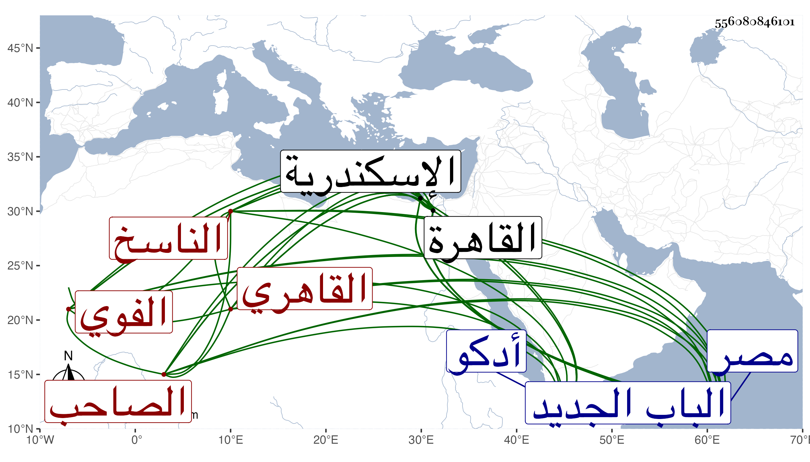

0902Sakhawi.DawLamic.ITO20230111-ara1.EIS1600.556080846101
Biography ID: 556080846101
505
حسن بن نصر الله بن حسن بن محمد بن أحمد بن عبد الكريم بن عبد السلام . هكذا كتبه لي أخوه فخر الدين الناسخ الصاحب بدر الدين بن ناصر الدين بن بدر الدين بن شرف الدين بن كمال الدين بن كريم الدين بن زين الدين الأدكوي الأصل الفوي القاهري ويعرف بابن نصر الله ، وزاد بعضهم محمدا بينه وبين نصر الله وهو غلط . أصله من أدكو قريبة بالمزاحمتين من أعمال القاهرة . كان جده الأعلى الشرف محمد بن أحمد خطيبها ثم بذبي وبعده تعانى ابنه البدر المباشرة وفطن للحساب ، وباشر عند سيف الدين الكناني متولي فوة وولد له نصر الله فنشأ بها وباشر بها ثم باسكندرية عدة وظائف وولد له صاحب لترجمة في ربيع الأول وقبل الآخر سنة ست وستين وسبعمائة بفوة ، ونشأ في كنفه وزوجه بابنة ناظرها ابن الصغير وصار عديل الفخر بن غراب وقدم القاهرة في حدود التسعين وسبعمائة وهو فقير جدا ثم بعد ذلك وهو كذلك فكتب التوقيع بباب القاضي ناصر الدين بن التنسي ثم خدم نحو الشهرين شاهدا في ديوان أرغون شاه أمير مجلس في الدولة الظاهرية برقوق ثم انتمى إلى مهنى دوادار بكلمش العلائي أمير سلاح وحسن حاله ولا زال يترقى حتى ولي الحسبة ونظر الجيش بالديار المصرية ثم وزارتها ثم الخاص بها في الدولة الناصرية فرح وكذا ولي الوزارة والخاص في الدولة المؤيدية ثم صودر مرارا ثم عمل لاستادارية في دولة الصالح محمد ثم انفصل عنها وأعيد إلى الخاص عوضا عن مرجان الخازندار ثم أعيد إلى الاستادارية في الدولة الأشرفية عوضا عن ولده صلاح الدين محمد وانفصل عن الخاص بالكريمي عبد الكريم بن كاتب جكم في أوائل جمادى الأولى سنة ثمان وعشرين ثم انفصل عن الاستادارية وصودر هو وولده المذكور ثم أعيد ثالثا بعد مدة إلى الاستادارية فلم تطل مدته فيها بل عزل عن قرب ، ولزم داره إلى أن مات ولده فاستقر بعده في كتابة السر ولم يلبث أن عزله الظاهر بالكمالي بن البارزي ولزم البدر منزله واستولت عليه الأمراض المختلفة حتى مات في سلخ ربيع الأول سنة ست وأربعين ودفن من الغد بتربته التي بالصحراء خارج الباب الجديد عند ولده صلاح الدين وكان شيخا طوالا ضخما حسن الشكالة مدور اللحية كريما شهما مع بادرة وحدة وصياح وإقدام على الملوك وانهماك في اللذات وتأنق في المآكل والمشارب وله بفوة مدرسة حسنة على البحر فيها خطبة وتدريس ومآثر غير ذلك ، وله ذكر في حوادث سنة ست عشرة من أنباء شيخنا ، وذكره المقريزي في عقوده سامحه الله .
